Why I am running
Because I see enormous, untapped potential within Akatakyie USA — a stronger Association, greater opportunities for our members, and a deeper partnership with OWASS.
Katakyie · AH69 / AO356
for President of Akatakyie USA
Your voice shapes our future.
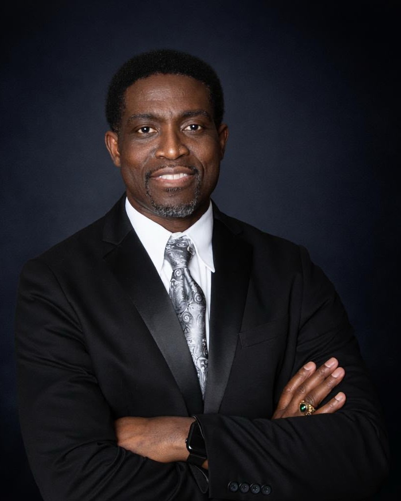
Choose Ready. Choose Proven.
Experience · Integrity · Impact · Legacy
The Vision
Akatakyie USA is at its strongest when every year group, every chapter and every member can see themselves in the work. This campaign is about turning that goodwill into structure — an association that is organised, transparent and financially sound enough to serve OWASS and its sons for generations to come.
Ready means we do not spend the first year learning the job. Proven means the commitments made here are the same kind of commitments that have already been kept. That is the standard this leadership is offering.
Why I am running
Because I see enormous, untapped potential within Akatakyie USA — a stronger Association, greater opportunities for our members, and a deeper partnership with OWASS.
What I stand for
Service, discipline, leadership, fraternity and integrity. Those are the five values OWASS left me with, and they are the test I am asking to be held to.
What makes this different
Not simply to return, but to return more experienced, more reflective and better prepared — a former President who has had the chance to step back, observe and identify where we can do better.
Five Pillars
Bringing us together as one brotherhood — chapters, year groups and the diaspora pulling in the same direction.
Building wealth, growing the endowment and sustaining our future on income we control, not one-off appeals.
Investing in our members and empowering the next generation — mentorship, scholarships and doors that open both ways.
Turning vision into results that make a measurable difference — projects with owners, budgets and published outcomes.
Building today for generations to come, so the association we hand over is stronger than the one we inherited.
The Candidate
AH69 / AO356 · Candidate for President, Akatakyie USA
My journey began in Kumasi, where I attended Wesley College Practice School before transferring to Cambridge International School, Kwadaso. Raised a Methodist, I might easily have ended up at our great rival school — but fate had other plans.
In 1982, I entered Opoku Ware School, joined the AH Class, and was assigned to St. Peter’s House. That moment would profoundly shape my life.
At OWASS, the seeds of service and leadership were planted. I served as Class Prefect, Student Council Representative, and ultimately Senior Prefect for the 1988/89 academic year.
My involvement extended beyond student leadership. I was active in the Protestant Choir and Scripture Union, serving as Treasurer/Organizing Secretary and later SU President.
OWASS also gave me one of life’s greatest blessings. Through Scripture Union, I attended a student leadership conference where I met my sweetheart, Harriet. Of all the blessings connected to my OWASS journey, she remains the greatest.
Indeed, OWASS has done me well!
I completed both my O-Level and A-Level education at OWASS, leaving with much more than an education. I left with values that continue to guide me:
Service · Discipline · Leadership · Fraternity · Integrity
Holding the replica Mponponsuo sword during my swearing-in as Senior Prefect symbolized the beginning of what would become a lifetime of service to OWASS.
Decades later, that journey continued through Akatakyie USA. I served as Vice President — a period of understudying, listening, and learning. I later served as President — a period in which, working together with dedicated Akatakyie, we delivered notable and tangible results for our Association.
Over the years, I have championed the OWASS Endowment Fund, supported it financially from its early days, and encouraged others to do the same. I have helped lead fundraising for major legacy initiatives, including the two Multipurpose Courts and the OWASS@70 Anniversary Brochure, strengthened chapter, year group and member engagement, and represented Akatakyie USA both nationally and internationally.
Through every role, one belief has remained constant:
Leadership is not about the individual. It is about bringing people together around a common purpose and leaving the institution stronger than you found it.
Serving as a former President has given me another valuable perspective — the opportunity to step back, observe, reflect, and identify where we can do better.
I see enormous, untapped potential within Akatakyie USA. I believe we can build a stronger Association, create greater opportunities for our members, strengthen our chapters, deepen our partnership with OWASS, and leave an even greater legacy for generations to come.
That is why I once again offer myself for service — not simply to return, but to return more experienced, more reflective, better prepared, and even more determined to bring people together to deliver results.
My story began at OWASS. My commitment to OWASS and Akatakyie continues.
Serve with Purpose.
Lead with Integrity.
Leave a Lasting Legacy.
Katakyie Dr. Emmanuel OpokuAH69 / AO356
The Record
Akatakyie USA has spent years turning subscriptions and goodwill into things you can stand on — courts, a boulevard, chapters that meet. This is the work this candidacy is built on.
The multipurpose courts · Opoku Ware School, Kumasi
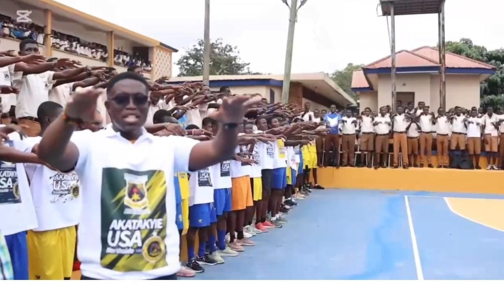
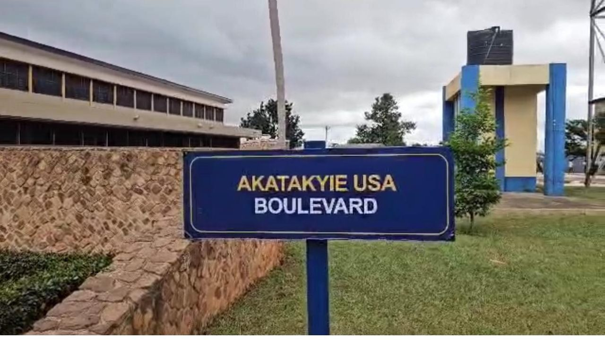
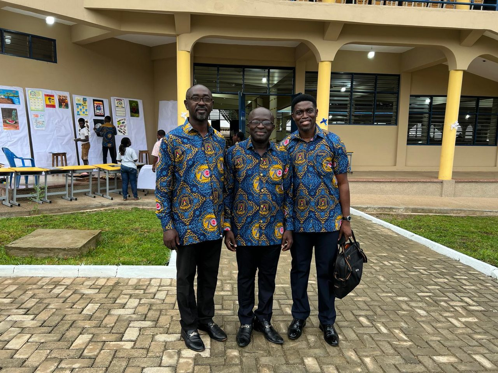
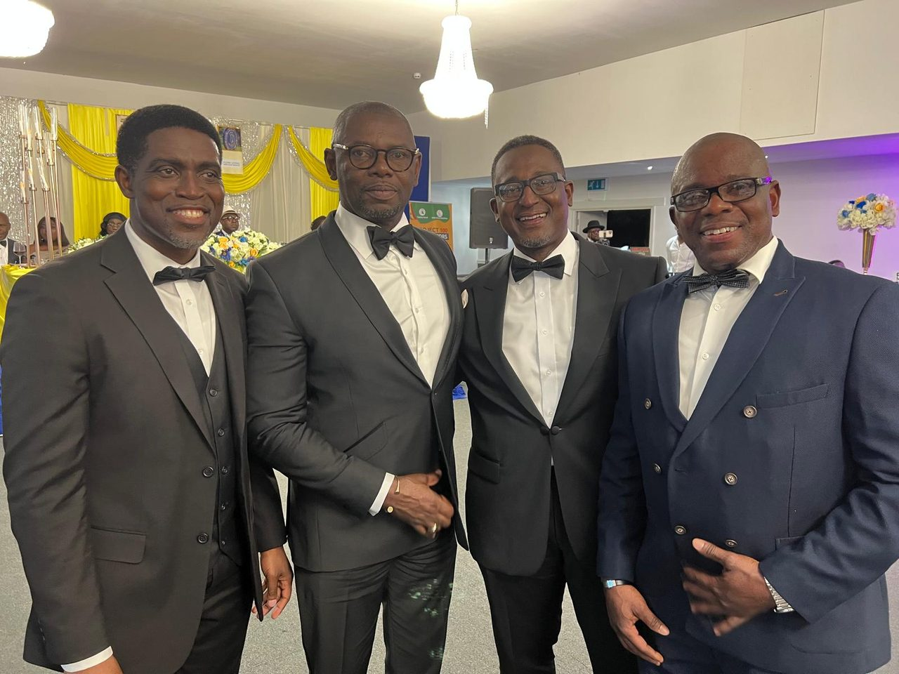
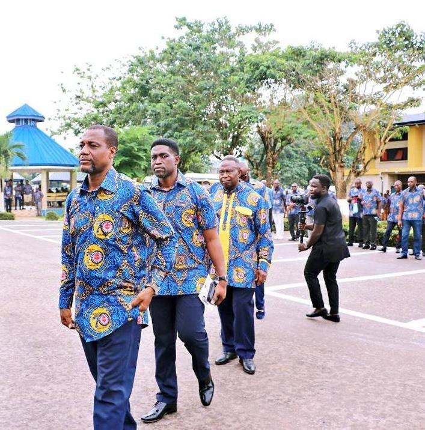
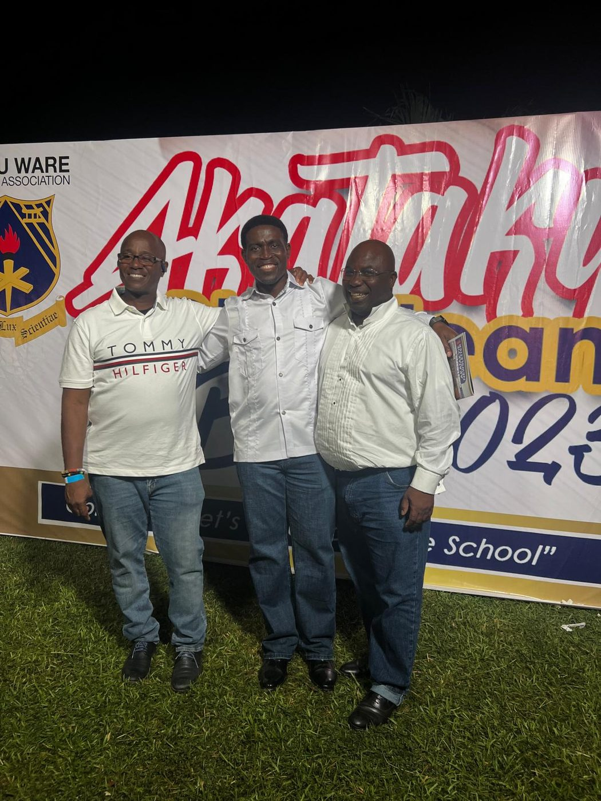
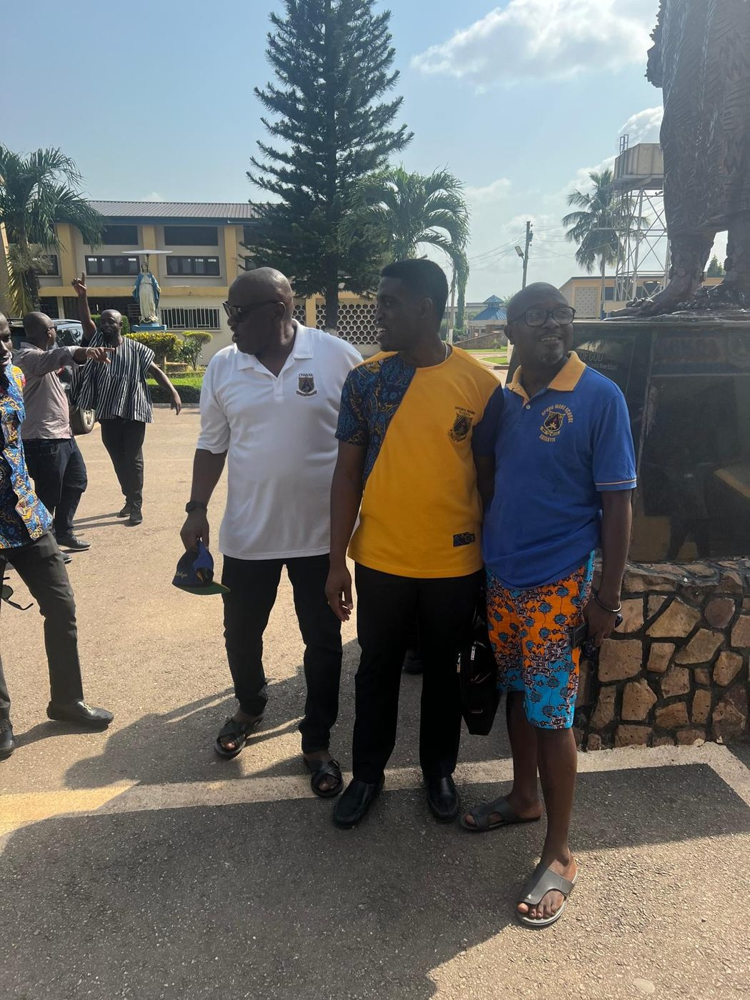
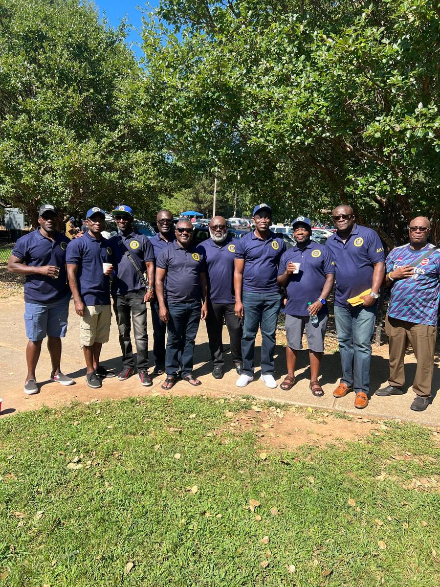
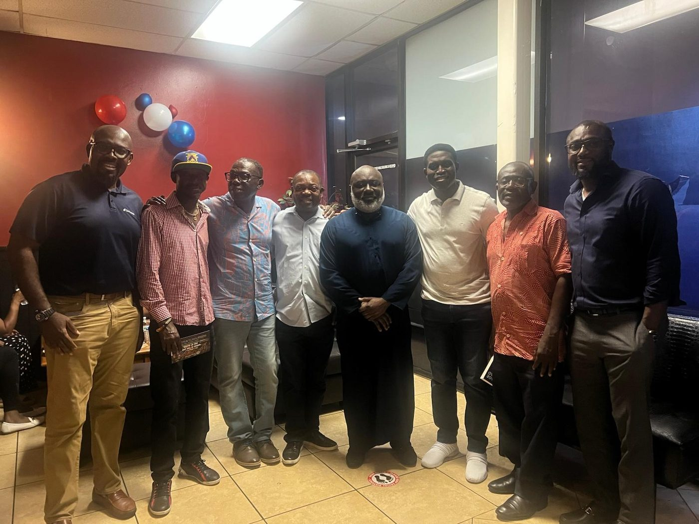
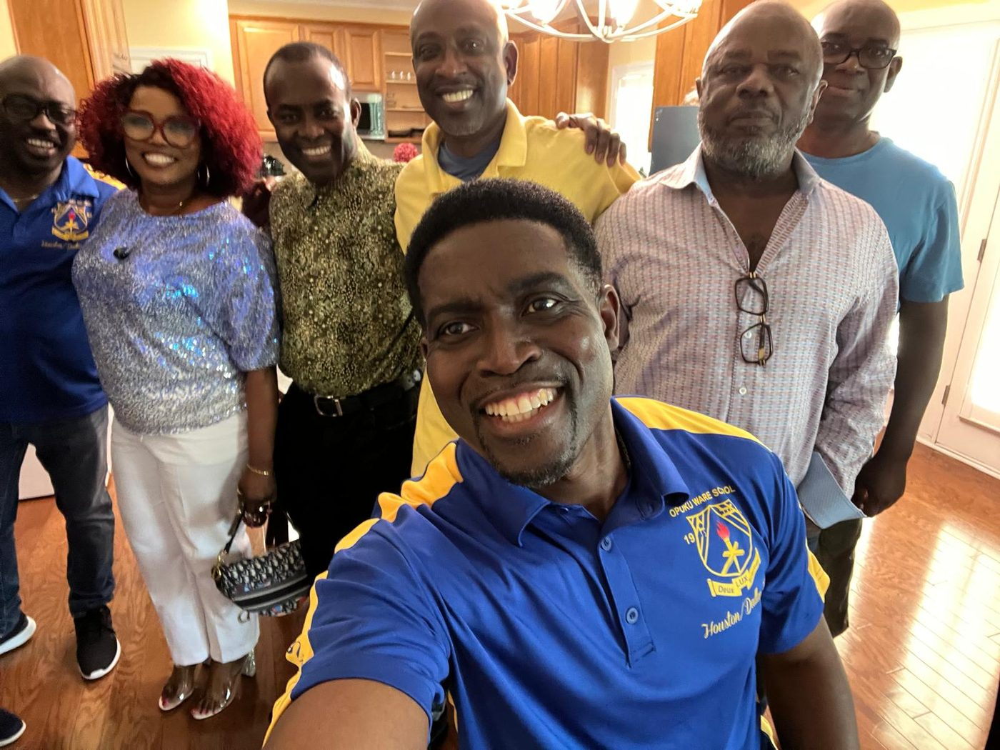
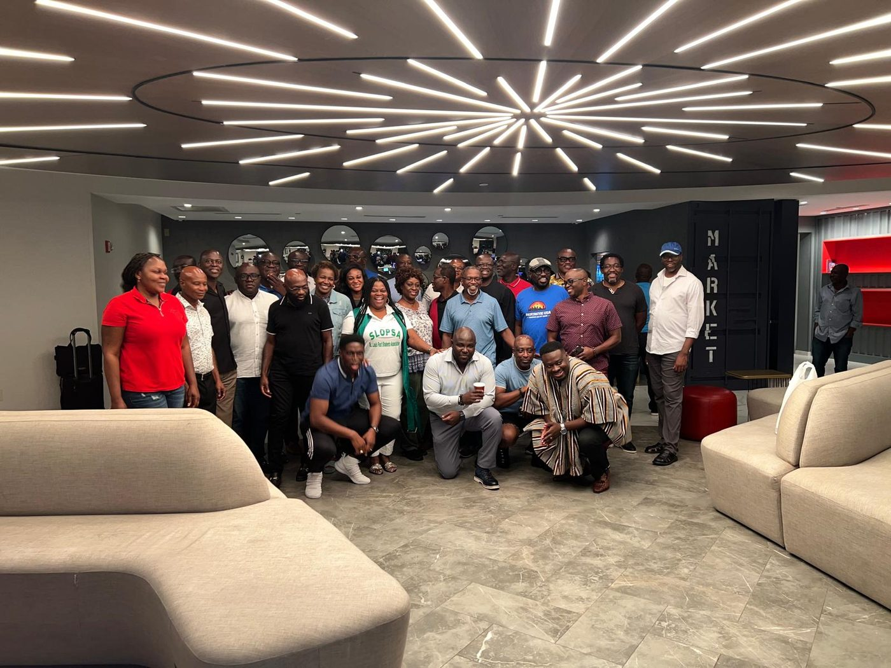
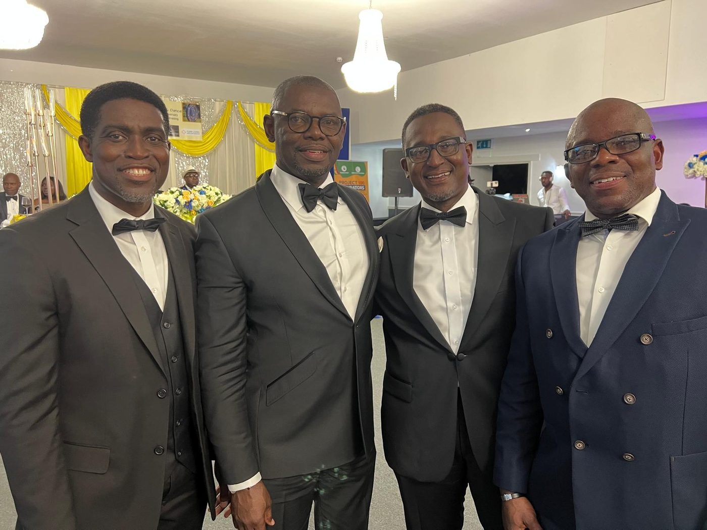
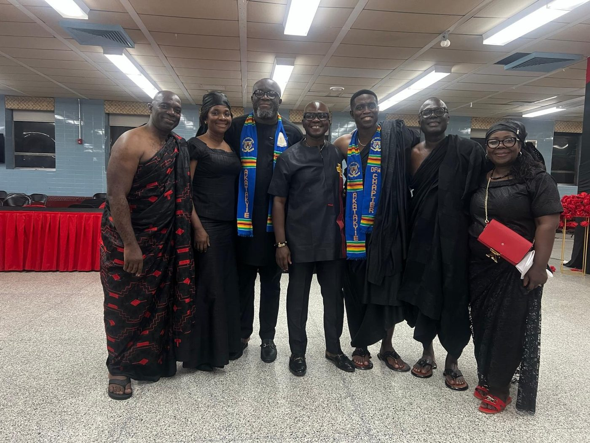
The Plan
A presidency should be judged on what it finishes, not what it announces. These are the commitments the campaign is prepared to be measured against.
Get Involved
Tell us you're with us, and we'll keep you posted on the campaign, the town halls and the voting window. Your details go straight to the campaign team — nothing is stored on this website.
The Power of Us!!!
For OWASS. For Akatakyie. For Generations to Come.